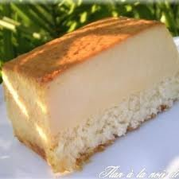

Flan coco
Ingrédients
×
- 4 oeufs
- 1 boîte de lait concentré sucré
- lait
- 0.5 sachet de noix de coco râpée
- 100 g de chocolat
- 20 cl de crème liquide

Préparation
Étape 1
Battre 4 oeufs et les mélanger avec 1 boîte de lait concentré sucré et la même dose de lait.
Étape 2
Ajouter 0.5 sachet de noix de coco râpée.
Étape 3
Cuire 30 à 45min au bain-marie à th. 4-5 (la lame d’un couteau doit ressortir propre).
Étape 4
Une fois refroidi, napper de 100 g de chocolat fondu dans 20 cl de crème liquide.
Résumé
4 oeufs
1 boîte de lait concentré sucré
lait
Battre
0.5 sachet de noix de coco râpée
Cuire bain-marie th. 4-5
100 g de chocolat
20 cl de crème liquide
napper